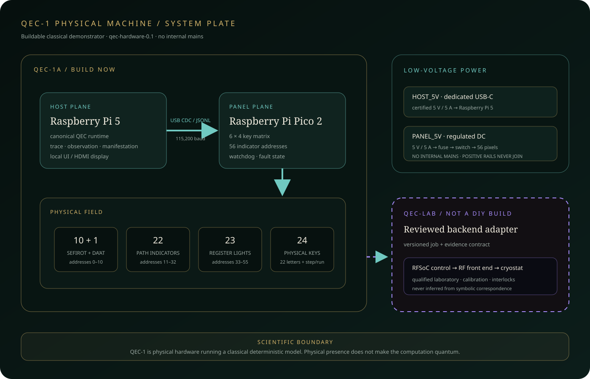
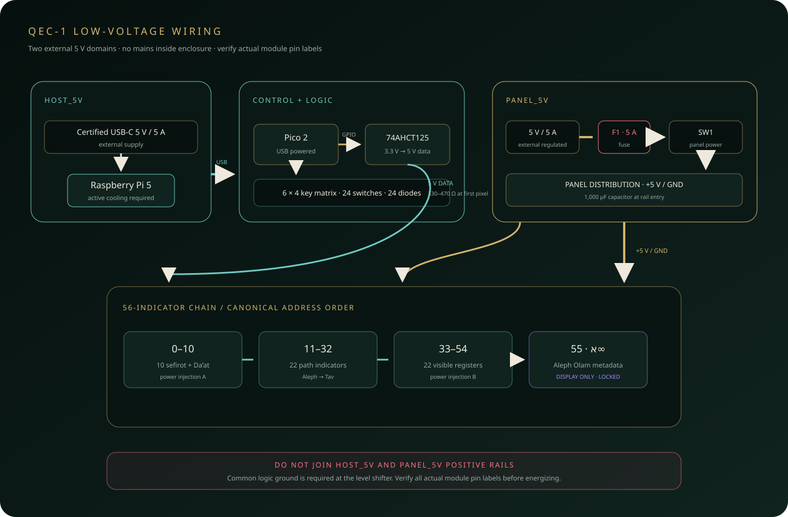
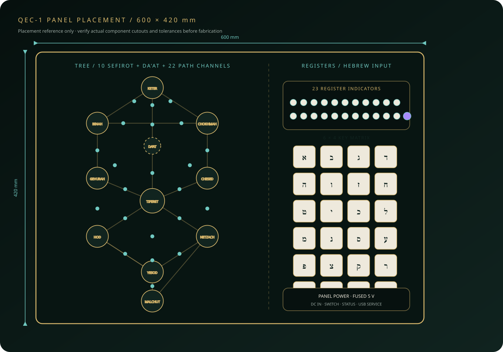
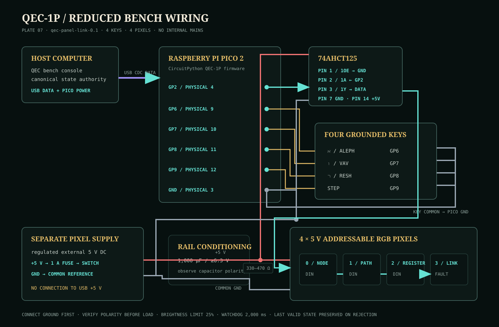

Build now
QEC-1A uses a Raspberry Pi host, Pico panel controller, keys, indicators, and a versioned USB link.
Four repository-native drawings fix the system boundary, low-voltage power and signal paths, 600 × 420 mm control-surface layout, and the reduced harness that must pass before the QEC-1A panel is fabricated.




QEC-1A uses a Raspberry Pi host, Pico panel controller, keys, indicators, and a versioned USB link.
Two certified external 5 V supplies remain separate. No AC mains enters the enclosure.
Validate four keys and four pixels before building the full harness or cutting the final panel. Run the proof.
The physical run must reproduce the canonical trace hash and manifestation checksum.
The panel drawing fixes the overall arrangement, not manufacturer-specific cutout tolerances. Print at 1:1, measure chosen components, and test a disposable template before final fabrication.
These plates describe a deterministic classical interface. QEC-1 contains no qubits; laboratory quantum-control equipment remains outside this build and behind a reviewed adapter.